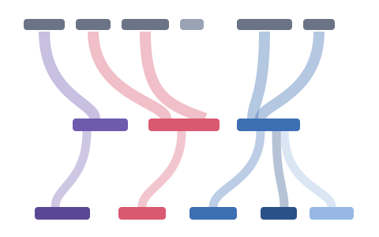
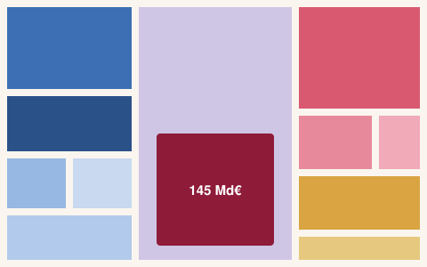

Le flux Sankey
D'où vient l'argent, où il va. Les recettes se ramifient vers l'État, la Sécu, les collectivités et les retraites. Cliquez un flux pour plonger jusqu'au programme et à l'action.
Explorer le flux →
Le Mondrian Rectangles
Chaque euro dépensé, en aires proportionnelles. Un comparateur intégré, le déséquilibre des retraites (136 Md€) en évidence, et un bouton pour révéler le maquillage comptable.
Explorer le Mondrian →Les deux vues sont comptablement équilibrées : recettes + dette = dépenses. Méthodologie détaillée et sources sur chaque page.